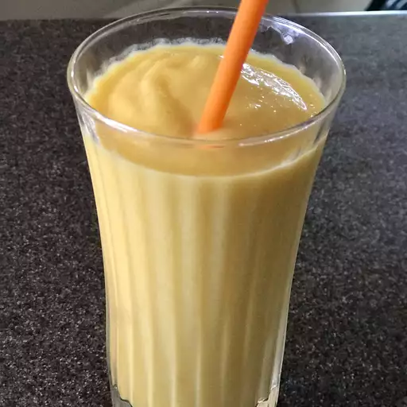

Yogurt Drink

Description
Mango Lassi (Indian Yogurt Drink)
A refreshing, creamy yogurt-based drink blended with ripe mangoes, sugar, and a hint of cardamom.
Ingredients
- 1 cup plain yogurt
- 1 cup chopped ripe mango (or mango pulp)
- 2–3 tbsp sugar (to taste)
- 1/4 cup water or milk (optional)
- Pinch of cardamom (optional)
Steps
- Blend all ingredients until smooth.
- Chill and serve cold.
- Serve Cold!
Home